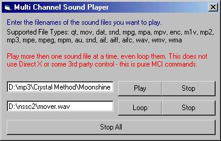

First off - we have to get a few things out in the open…
From past experience with PSC, I have learned to include this little rant on PSC etiquette
(please forgive me)
1. All you people out there that say "I did this when I was 3 years old" - well I spent 2 hours looking for it on PSC and the closest thing I found used Direct X which is not an option for the project I am working on. So prove it but uploading your code.
2. I did not write the MCI Command module, an author by the name of "Ahadal" did - if I got the name wrong then please forgive me. Anyways if you use the module, give him his due credit.
3. Everyone is a newbie once in their life, so if you are a newbie, read and follow directions before you jump to conclusions and rant and rave that this does not work.
4. If you found this useful or slightly amusing them VOTE. I cannot tell you how many times I have uploaded code and everyone left a message saying it rocked, but them I get 2 votes out of 2000 people. Sorry about this one, but it is a pet peeve, and all you other authors out there know that feeling, when you upload and get crap for votes.
Instructions…
Step One
Compile the SNDPlayer.vbp project. This will create the OCX file.
Step two
Load the Project1.vbp project - this is the demo. If you do not do step one then VB will bark at you, some nonsense about a missing file :)
Step Three
Run the demo and enter filenames in the text boxes. The first one will "Play" the file you enter. The second one will "LOOP" the file you enter.
Notes
You can play multiple sounds at once. I have no idea what the limit is - MS Windows will more then likely let you know when you reach it.
For some reason the LOOP command causes a "pause" or "lag" on some computers. So far the only fix I have found for this is re-booting the computer, then it works fine.
Bryan Cairns
PS - search PSC under "cairns" for more projects I have uploaded. Most of my old work has been removed (by choice) so let me know what you think.